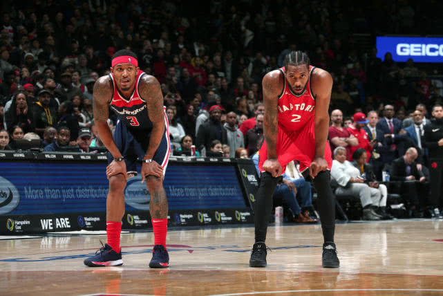

比赛回顾
首节还剩10分16秒时，托马斯-布莱恩特出现传球失误，被莱昂纳德抢断。还剩4分48秒时，接到洛瑞的传球，莱昂纳德三分远投得手。还剩26秒时，怀特在阿里扎投篮时犯规，送给奇才2次罚球机会。猛龙内线优势巨大，本节共抢下17个篮板，包括3个前场篮板，其中莱昂纳德一人就贡献3个篮板球。猛龙打出流畅配合，此节全队共完成10次助攻，其中洛瑞一人就为队友送出7次传球。首节战罢，本节比分定格为36-21，猛龙暂时领先。
次节回来还剩11分34秒时，兰德尔出现传球失误，被阿奴诺比抢断。还剩4分45秒时，杰夫-格林送精妙传球，比尔三分远投命中。还剩2分4秒时，莱昂纳德在波特投篮时犯规，送给奇才2次罚球机会。猛龙对篮板发起疯狂进攻，本节共抢下16个篮板，包括4个前场篮板，其中西卡姆一人就贡献5个篮板球，凭借篮下优势取得11分领先优势。奇才频飙三分，全队本节投10粒三分球，命中率50.00%。半场结束，猛龙以61-50领先。